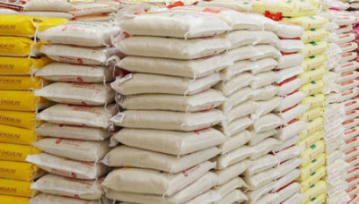

More than 90% of rice is produced and consumed in Asia. In terms of food consumption, what distinguishes Asia from the rest of the world is its great dependency on rice: it is the basic staple for the majority of the population, including the region’s 560 million poor. Other regions rely more heavily on other cereals. Indeed, as a poor person’s food, rice is a sensitive topic in many Asian countries; governments can “make or break” themselves with the fall and rise of rice prices. In many of these countries, rice is deeply engraved in their rich culture and tradition. Asian countries also take immense pride in having a vibrant rice farming system, and the reaffirmation of many countries after the 2008 rice price crisis to revitalize the domestic rice sector and achieve food security through rice self-sufficiency is a good example of what rice means to many countries in the region. The introduction of high-yielding varieties in the late 1960s, which marked the beginning of the Green Revolution, has more than tripled Asian rice production in the past four-plus decades, from 200 million t (paddy equivalent) in the early 1960s to more than 600 million t in 2010. This has been possible with the introduction of modern varieties in tandem with assured irrigation, subsidized inputs (such as fertilizer, fuel, and pesticide), and guaranteed prices. During this period, more than 1,000 modern varieties were released to farmers in Asian countries, with adoption going from 30% in 1970 to about 70% in 1990.
Since the early 1990s, strong economic growth in many Asian countries, particularly in China and India, halted the upward trend in Asian per capita rice consumption as consumers diversified their diet from rice to high-value foods such as meat, dairy products, fruits, and vegetables. Between 1992 and 2005, per capita rice consumption in Asia as a whole declined from 103 to 96 kg. Per capita rice consumption in India began to decline after the economic liberalization in the early 1990s. In China and India, per capita consumption declined by 10 and 8 kg, respectively, between 1992 and 2005. Nevertheless, total rice consumption in Asia has continued to rise on the back of population growth and the rise in per capita rice consumption in other Asian countries. However, the declining trend in per capita rice consumption in large countries such as China, India, and Indonesia has been reversed in the last few years and per capita consumption has started rising again. This upswing contributed to the recent surge in total annual Asian rice consumption by 40 million t over 7 years. Household consumer expenditure data collected by India’s National Sample Survey Organization confirm the flattening in per capita consumption in recent years from the declining trend in the 1990s in all four regions of India. In other Asian countries such as Bangladesh and the Philippines, per capita rice consumption remains strong across income groups in both urban and rural areas. National representative household consumption survey data collected between 2000 and 2010 from both the Philippines (Family Income and Expenditure Survey) and Bangladesh (Household Income and Expenditure Survey) confirm this trend. Even high-income groups in both rural and urban areas consume more rice with a rise in income. Unlike the Philippines and Bangladesh, per capita rice consumption is on a downward trend in other Asian countries such as Malaysia, Thailand, and Vietnam.
